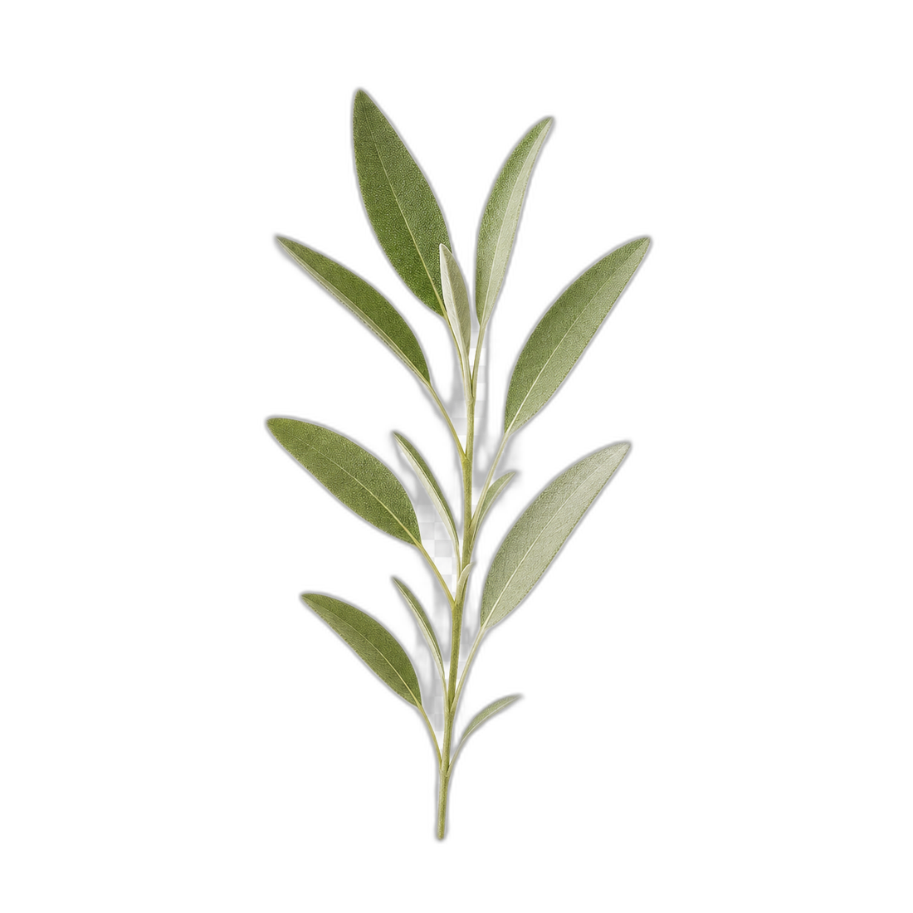
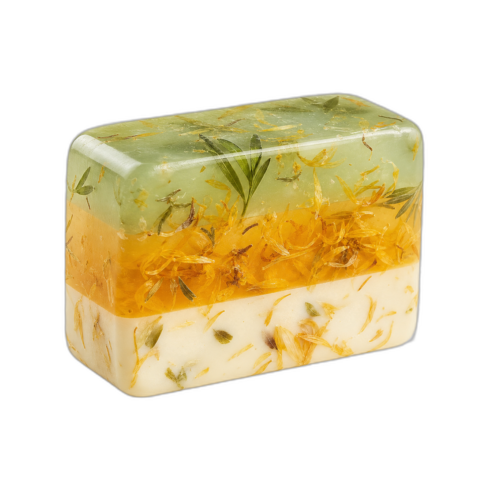
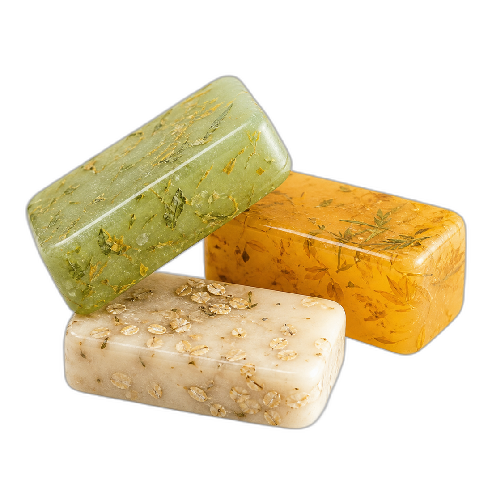

Savias
Ruta Jabonera
Recetario
50 recetas creativas, únicas y funcionales con jabón base de glicerina


Bienvenida
Crea jabones hermosos, prácticos
y listos para vender
Descubre recetas únicas para crear jabones perfectos para uso personal o para vender. Cada una está diseñada para que explores tu creatividad con diferentes colores, aromas y beneficios para la piel, todas elaboradas con jabón base de glicerina.
El método base
Todas las recetas se preparan igual. Aprende estos cuatro pasos una vez y aplícalos en las 50.
1
Pesa y derrite
Pesa el jabón base, córtalo en cubos y derrítelo a baño maría (máx. 65°). No lo sobrecalientes.
2
Enriquece
Fuera del fuego, añade los aditivos y principios activos elegidos.
3
Aromatiza
Incorpora la fragancia o el aceite esencial al gusto.
4
Enmolda
Vierte en el molde, rocía alcohol, deja solidificar, desmolda y cubre con film.
Con aditivos terapéuticos
Contra el acné
Carbón Activado & Tea Tree
para barra de 100 g
Ingredientes
- 100 g de jabón base de glicerina
- 1 g carbón activado en polvo
- 8 gotas de aceite esencial de tea tree
Pieles grasas
Arcilla Verde & Limón
para barra de 100 g
Ingredientes
- 100 g jabón base de glicerina
- 1 g arcilla verde
- 3 gotas de aceite esencial de limón
- 5 gotas de aceite esencial de romero
✦
Consejo
Derrite tu jabón a baja temperatura para evitar burbujas y quemar la base.
Con aditivos terapéuticos
Piel irritada
Aloe Vera & Lavanda
para barra de 100 g
Ingredientes
- 100 g de jabón base de glicerina
- 3 g gel de aloe vera puro
- 8 gotas de aceite esencial de lavanda
✦
Idea para empaque
Personaliza tus empaques con tarjetas colgantes con datos del jabón y una ilustración.
Piel sensible
Avena Coloidal & Caléndula
para barra de 100 g
Ingredientes
- 100 g jabón base de glicerina
- 2 g avena coloidal
- 2 g de infusión de caléndula
Con aditivos terapéuticos
Pieles maduras
Arcilla Rosada & Rosa Mosqueta
para barra de 100 g
Ingredientes
- 100 g de jabón base de glicerina
- 1 g arcilla rosada
- 1.5 g de aceite de rosa mosqueta
- (vegetal)
Acné
Neem & Menta
para barra de 100 g
Ingredientes
- 100 g jabón base de glicerina
- 1 g polvo de neem
- 7 gotas de aceite esencial de menta
✦
Consejo
No excedas los aditivos, lo recomendado es maximo el 5% , o sea 5g de aditivos por cada 100g de jabón base.
Con aditivos terapéuticos
Piel mixta
Pepino & Romero
para barra de 100 g
Ingredientes
- 100 g de jabón base de glicerina
- 2 g extracto de pepino
- 8 gotas de aceite esencial de romero
✦
Idea para empaque
Usa pañuelos de tela pequeños (técnica furoshiki para envolver).
Piel sensible
Arcilla Rosa & Lavanda
para barra de 100 g
Ingredientes
- 100 g jabón base de glicerina
- 1 g arcilla rosa
- 10 gotas de aceite esencial de lavanda
Con aditivos terapéuticos
Poros abiertos
Carbón Activado & Eucalipto
para barra de 100 g
Ingredientes
- 100 g de jabón base de glicerina
- 1 g carbón activado
- 7 gotas de aceite esencial de eucalipto
Piel irritada
Caléndula & Miel
para barra de 100 g
Ingredientes
- 100 g jabón base de glicerina
- 2 g infusión concentrada de manzanilla
- 1 g miel
✦
Consejo
Si vas a poner color, añade colorantes específicos para jabón